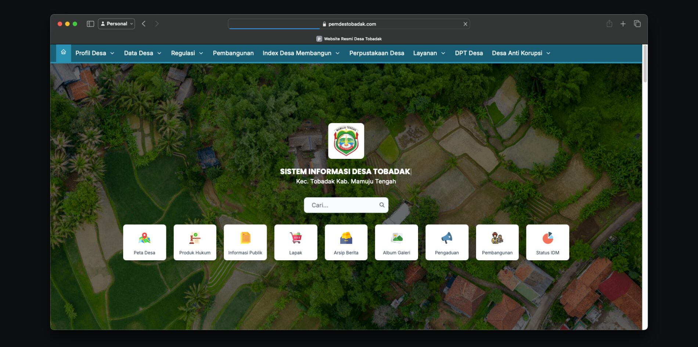
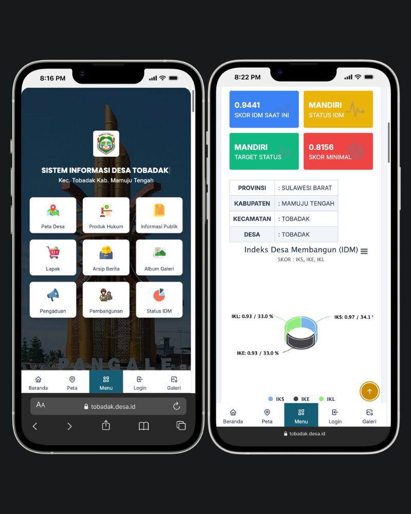
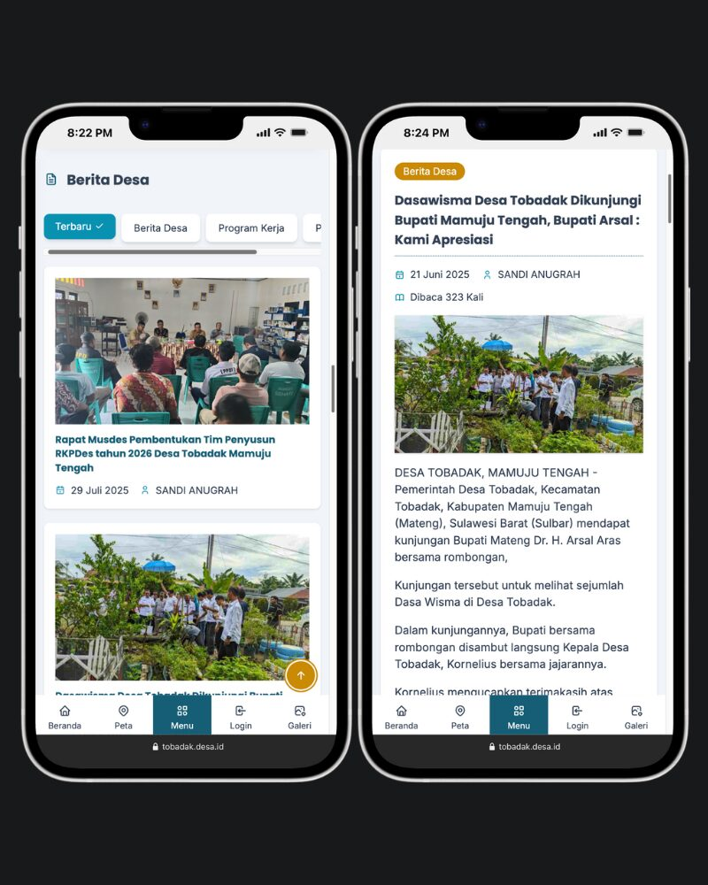
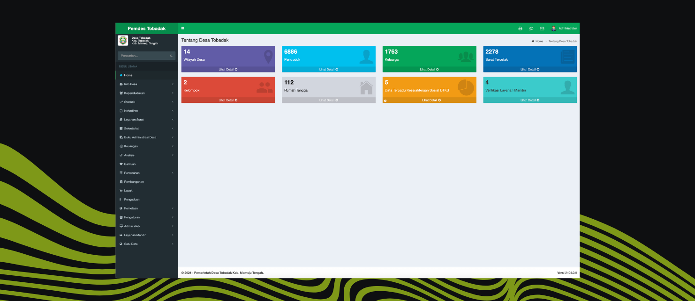
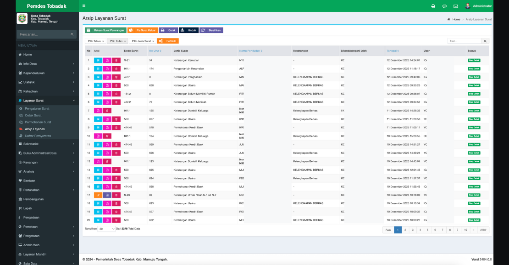
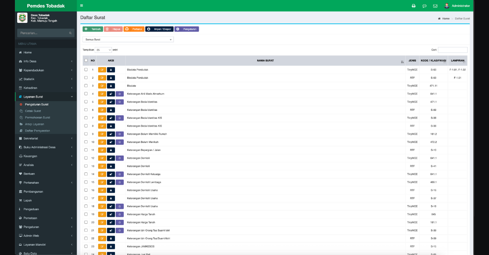

Transformasi Digitalisasi Desa


Manfaat Digital Desa
- Mempercepat proses persuratan desa.
- Mengurangi kesalahan data administrasi.
- Memudahkan pengarsipan dan pencarian dokumen.
- Meningkatkan efisiensi kerja perangkat desa.
- Mendukung pelayanan yang transparan dan modern.
Fitur Sistem
- Persuratan digital otomatis.
- Manajemen data penduduk terpusat.
- Template surat standar desa.
- Arsip dokumen digital.
- Dashboard administrasi desa.
- Website profil dan informasi desa.
01 Latar Belakang
Administrasi Desa Tobadak sebelumnya masih dilakukan secara manual menggunakan aplikasi pengolah kata tanpa sistem terintegrasi. Proses persuratan menjadi lambat, data sulit dikelola, serta berisiko terjadi kesalahan dan duplikasi arsip. Kondisi ini mendorong perlunya transformasi digital untuk meningkatkan efisiensi dan kualitas pelayanan desa.

02 Tantangan
Administrasi Desa Tobadak sebelumnya masih dilakukan secara manual menggunakan aplikasi pengolah kata tanpa sistem terintegrasi. Proses persuratan menjadi lambat, data sulit dikelola, serta berisiko terjadi kesalahan dan duplikasi arsip. Kondisi ini mendorong perlunya transformasi digital untuk meningkatkan efisiensi dan kualitas pelayanan desa.
Dalam proses digitalisasi Desa Tobadak, terdapat beberapa permasalahan utama yang menjadi tantangan, antara lain:
- Proses persuratan masih dilakukan secara manual menggunakan Microsoft Word tanpa sistem terpusat.
- Pembuatan surat membutuhkan waktu lama karena pengisian data dilakukan berulang.
- Risiko kesalahan penulisan data penduduk dan format surat yang tidak konsisten.
- Arsip surat tidak terdokumentasi dengan baik sehingga sulit dicari kembali.
- Keterbatasan kemampuan teknologi sebagian perangkat desa dalam menggunakan sistem digital.
- Kebutuhan akan sistem yang sederhana, mudah digunakan, namun tetap sesuai dengan standar administrasi desa.

03 Solusi
Solusi yang diterapkan adalah pengembangan sistem website desa yang terintegrasi untuk mendukung pelayanan administrasi dan pengelolaan data secara digital. Sistem ini dirancang untuk mempercepat proses persuratan, meningkatkan akurasi data, serta memudahkan perangkat desa dalam menjalankan tugas administrasi sehari-hari.
- Sistem persuratan digital terintegrasi yang memungkinkan pembuatan surat otomatis berbasis data penduduk.
- Manajemen data kependudukan terpusat untuk memastikan keakuratan dan konsistensi informasi.
- Template surat standar desa yang dapat digunakan secara cepat dan seragam.
- Arsip surat digital yang tersimpan rapi dan mudah dicari kembali.
- Dashboard administrasi desa untuk memantau aktivitas layanan dan data desa.
- Pengelolaan data wilayah, keluarga, dan penduduk secara terstruktur.
- Sistem dirancang sederhana dan mudah digunakan oleh perangkat desa.
- Peningkatan transparansi dan efisiensi pelayanan administrasi kepada masyarakat.

Untuk Desa & Instansi
Ingin Desa Anda Go Digital?
Kami bantu dari pembuatan sistem, website, hingga pelatihan perangkat desa supaya bisa mengelolanya secara mandiri.